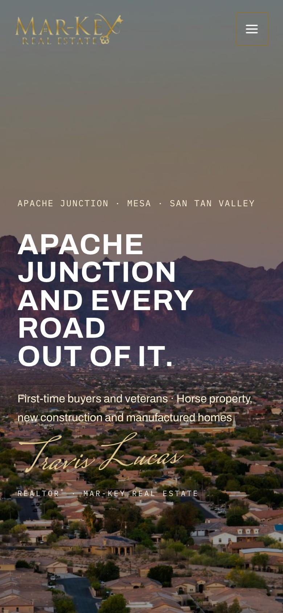
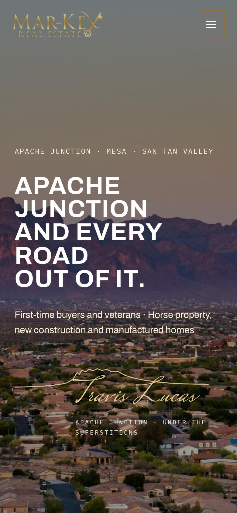
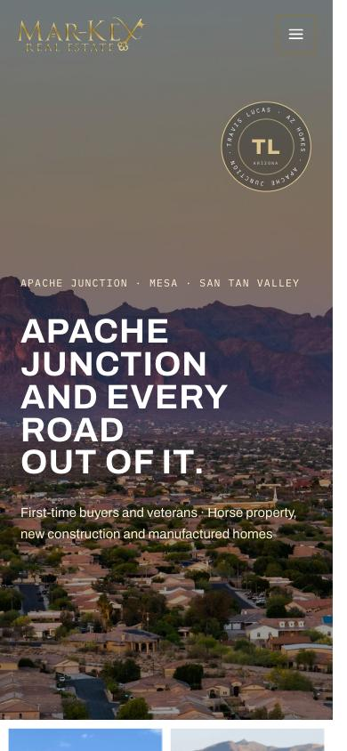
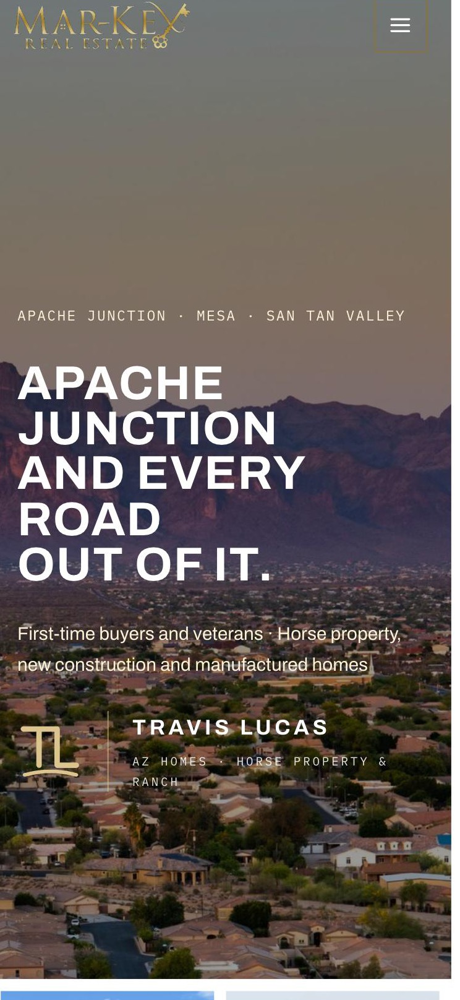

A Your signature
Your name, signed in gold under the headline, with "REALTOR® · Mar-Key Real Estate" beneath it. The lettering shown is a placeholder. We would use your real signature.

B Superstition skyline
One gold line traces the Superstition Mountains, the same ridge in your photo, and runs into your signature. We have not seen another agent in the area use anything like it.

C Your seal
A round gold badge with "Travis Lucas · AZ Homes · Apache Junction" around a TL monogram, set in the corner of the photo. The same badge works on its own as your social media profile picture.

D Your ranch brand
A TL brand in the style of a cattle brand, next to your name. It fits horse property and ranch country, and it is easy to put on yard signs, social posts and email.
